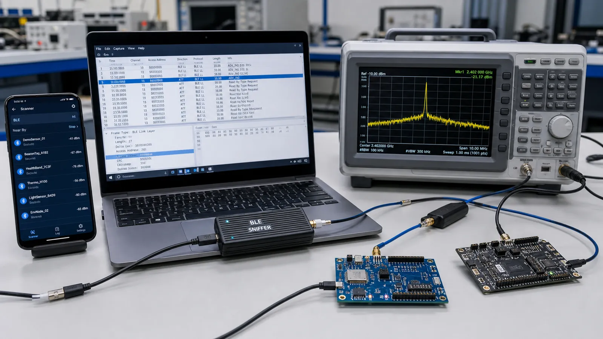

دیباگ BLE بدون مشاهده شواهد معمولاً به حدس تبدیل میشود. ابزار موبایل وضعیت GATT را نشان میدهد، Sniffer پکت روی هوا را میگیرد و Wireshark لایهها را Decode میکند. ابزار RF حرفهای برای مشکلات پایینتر از پروتکل به کار میآید.
با Scanner نام، آدرس، RSSI و AD Structure را ببینید. پس از اتصال، Serviceها را Discover کنید، Value را Read و Write کنید و CCCD را برای Notify فعال کنید. Log رخدادها را ذخیره کنید تا زمان قطع، MTU و خطای Permission مشخص باشد.
Sniffer باید کانال Advertising دستگاه هدف را پیدا کند و در زمان اتصال پارامترهای لازم برای دنبالکردن Channel Hopping را بگیرد. Capture ناقص ممکن است بهخاطر شروع دیرهنگام، فاصله زیاد، تداخل یا رمزنگاری باشد. Sniffer را نزدیک دستگاهها ولی با سطح سیگنال اشباعنشده قرار دهید.
فیلتر نمایش را مرحلهای بسازید: ابتدا دستگاه، سپس پروتکل ATT یا SMP و بعد Opcode موردنظر. ستونهای Handle، Length و Time Delta را اضافه کنید. دنبال اولین خطا بگردید؛ خطاهای بعدی ممکن است فقط نتیجه همان رخداد اول باشند.
RSSI برآوردی از توان دریافتی است و فاصلهسنج دقیق نیست. آن را در چند موقعیت و جهتگیری ثبت کنید. Throughput را با شمارش بایت کاربردی در بازه زمان اندازه بگیرید، نه سرعت PHY. Retransmission، MTU، Interval و محدودیت موبایل را در گزارش بنویسید.
زمان دقیق قطع را ثبت کنید، Capture را از قبل آغاز کنید، آخرین Connection Event و Reason را پیدا کنید و RSSI را کنار آن بنویسید. سپس فقط یک متغیر مثل فاصله، Interval یا Timeout را تغییر دهید. تغییر همزمان چند عامل نتیجه را غیرقابل تفسیر میکند.